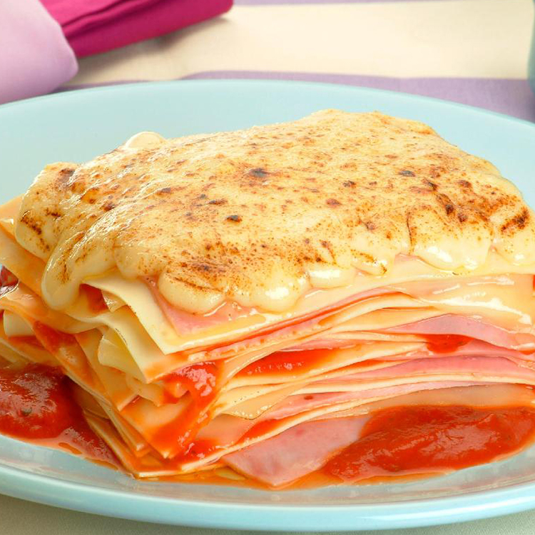

Lasanha de Presunto e Muçarela

Domingão tá chegando, então pega essa receita de lasanha deliciosa que seus familiares vão amar no almoço da família!
Ingredientes:
- 1 pacote de lasanha pré cozida
- Molho de tomate pronto
- 400 gramas de presunto
- 400 gramas de mussarela
- Orégano a gosto
Modo de Fazer:
- Em uma travessa faça um camada com o molho de tomate.
- Em seguida faça um camada com da lasanha, depois o presunto e a mussarela.
- Faça mais um camada com o molho do tomate e demais ingredientes.
- Polvilhe o orégano por cima e leve a lasanha para assar por 40 minutos.
- Tire a lasanha do forno e sirva-se.